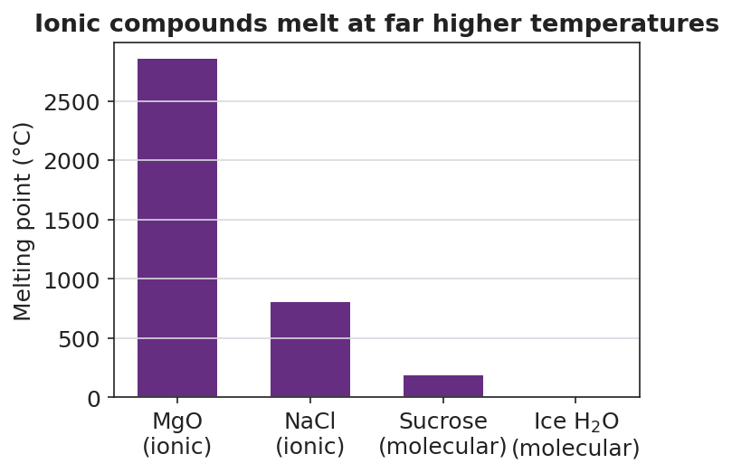

01 Phenomenon
Look at grains of table salt under a hand lens. No machine cuts or files them — salt forms this shape on its own. Every grain is a tiny cube, and when you crush a grain you get smaller cubes, not random dust. A sugar or alum crystal, by contrast, grows into a completely different shape. The cube must be coming from inside the salt — from how its particles are arranged at a scale far too small to see.
02 Driving question
Why do salt crystals always grow as cubes — and what does that shape reveal about how the ions are arranged?
03 Notice & wonder
| I notice… | I wonder… |
|---|---|
Turn & Talk #1: If the whole crystal is a cube because the particles inside are stacked in a cube, what would have to be true about how those particles connect to each other for the stack to keep its shape? In one sentence, describe what might “hold” one particle next to the next.
04 Initial model
Build the salt structure with your kit. One rule: a large sphere may only touch small spheres, and a small sphere may only touch large spheres — no two of the same kind may be neighbors. Build a flat 3 × 3 layer, then stack two more layers following the same rule looking up and down.
Sketch the arrangement of the two kinds of spheres in your model:
How many spheres of the opposite kind touch one sphere in the middle of your model? _______________
What single rule did every sphere follow? _______________________________________________
Without trying to, what overall shape did your model take? _______________ Why do you think it came out that way?
05 Investigate
Part 1 — Build and observe the lattice (ACTIVE LEARNING)
Keep your model assembled. Answer from what you built.
| Question | Your answer |
|---|---|
| When you tried to extend the model in just one direction (a long bar), did the “opposites touch” rule still work? | |
| What is the most balanced, symmetrical way for the model to grow? | |
| Is there a single “molecule” you can pull out of the model, or does the pattern just keep repeating? |
Part 2 — Electron transfer: where the charges come from
A neutral sodium atom (Na) has 1 valence electron. A neutral chlorine atom (Cl) needs 1 more electron to fill its outer shell. Complete the table to show what happens when the sodium atom transfers its valence electron to chlorine.
| Atom | Electrons gained or lost? | Charge after transfer | Name (cation or anion?) |
|---|---|---|---|
| Na | |||
| Cl |
Key question: After the transfer, sodium is positive and chlorine is negative. Why would these two ions then be pulled toward each other?
Part 3 — Reading the melting-point chart
Look at figures/melting_points.png:

Which two substances are ionic? _______________________________________________
Which has the higher melting point, an ionic compound or a molecular compound? _______________
Using your lattice model, explain why it takes so much more heat to melt an ionic compound than a molecular one.
06 Make it make sense
For each item, use the ionic lattice structure to explain the property. These compounds — NaCl and MgO — are the ones you modeled and saw on the chart.
NaCl (table salt) has a very high melting point (801 °C). Explain why, in terms of how the ions are held in the lattice.
- In the lattice, each ion is held by attractions to how many neighbors? _______________
- Why does breaking these attractions take so much energy? _______________________________________________
- So the melting point is: _______________________________________________
Solid NaCl does not conduct electricity, but salt water does. Explain the difference.
- In the solid lattice, the ions are: _______________________________________________
- When the salt dissolves, the ions become: _______________________________________________
- Electric current needs charged particles that can: _______________________________________________
MgO is ionic. In forming it, magnesium transfers 2 electrons to oxygen. Show the charges.
- Magnesium becomes the ion: Mg____ Oxygen becomes the ion: O____
- MgO melts even higher than NaCl (over 2800 °C). Suggest a reason, based on the size of the charges.
07 Key vocabulary
- electron transfer
- the movement of one or more valence electrons from a metal atom to a nonmetal atom; the metal becomes a positive cation and the nonmetal becomes a negative anion, each reaching a stable full outer shell
- ionic bond
- the electrostatic attraction holding together a positive ion (cation) and a negative ion (anion) that formed by electron transfer; opposite charges attract, like charges repel
- ionic lattice
- the repeating three-dimensional arrangement of alternating cations and anions in an ionic solid; this structure produces the compound's cubic crystal shape, high melting point, brittleness, and conductivity only when dissolved or molten
Use each term in a sentence about today’s model or investigation. Do not copy the definition — describe something you actually did or observed.
electron transfer: _______________________________________________ _______________________________________________
ionic bond: _______________________________________________ _______________________________________________
ionic lattice: _______________________________________________ _______________________________________________
08 Revise your model
Return to your Initial Model sketch. Add vocabulary labels:
Label the small spheres Na⁺ (cation) and the large spheres Cl⁻ (anion).
Draw an arrow between one Na⁺ and one neighboring Cl⁻. Label it: _______________ (the force holding them together).
Write one sentence using the word lattice that explains why your model — and a real salt grain — is a cube:
Then finish this Because / But / So sentence:
Solid salt does not conduct electricity because __________________________________________, but __________________________________________, so __________________________________________.
09 Exit ticket
(a) Calcium oxide (CaO) is ionic. Describe the electron transfer that forms it: how many electrons move, from which atom to which, and what charge does each ion end up with?
Electrons moved: ______ From ______ to ______ Calcium becomes: Ca____ Oxygen becomes: O____
(b) Molten (melted) potassium chloride, KCl, conducts electricity, but solid KCl does not. Explain why, using the idea of the lattice.
(c) In one sentence, explain why an ionic crystal shatters along flat faces when you strike it.
10 Explore further
- Crystal-growing lab (multi-day, started today): Each group prepares a saturated salt solution (or alum, for larger, faster crystals) and sets it aside to evaporate slowly over several days. Students photograph or sketch the crystal shape at intervals and connect the observed geometry back to the lattice model. Salt yields cubes; alum yields octahedra — the contrast reinforces that *the bulk shape mirrors the particle arrangement*. The setup is done in the first 8–10 minutes of Phase 2; observation continues in later lessons.
- Ionic-lattice 3D modeling (the core hands-on activity): Using a ball-and-stick kit, gumdrops/marshmallows + toothpicks, or magnetic spheres, students build a 3 × 3 × 3 NaCl lattice — alternating "Na⁺" and "Cl⁻" spheres so that every cation is surrounded by anions and vice versa. They then attempt to make the model larger and discover it naturally extends as a cube. Connect directly to `figures/nacl_lattice.png`.
- Javalab option: the Javalab "Ionic Bond Formation" and "Crystal Lattice" simulations (javalab.org) let students drag electrons from a metal to a nonmetal and watch the resulting ions snap into a lattice. Use as a projected demo if kits are unavailable; no login required.